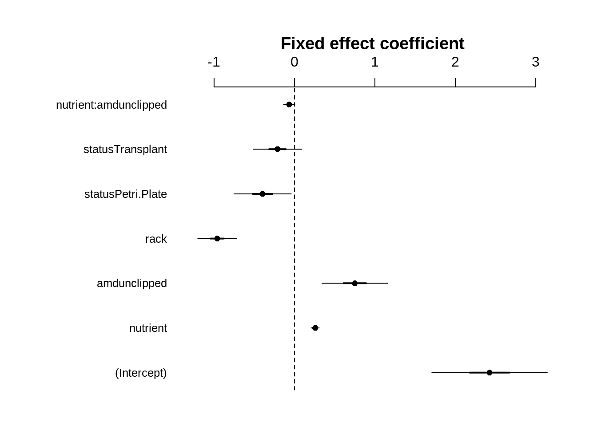
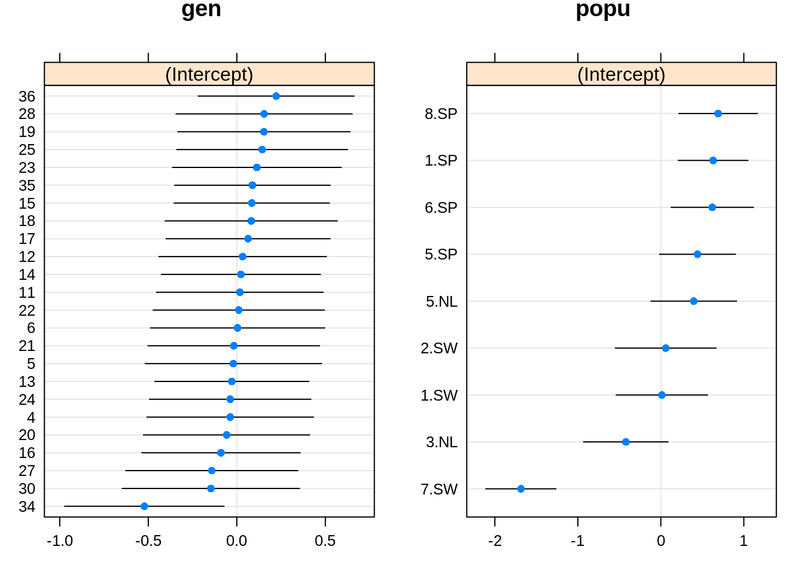
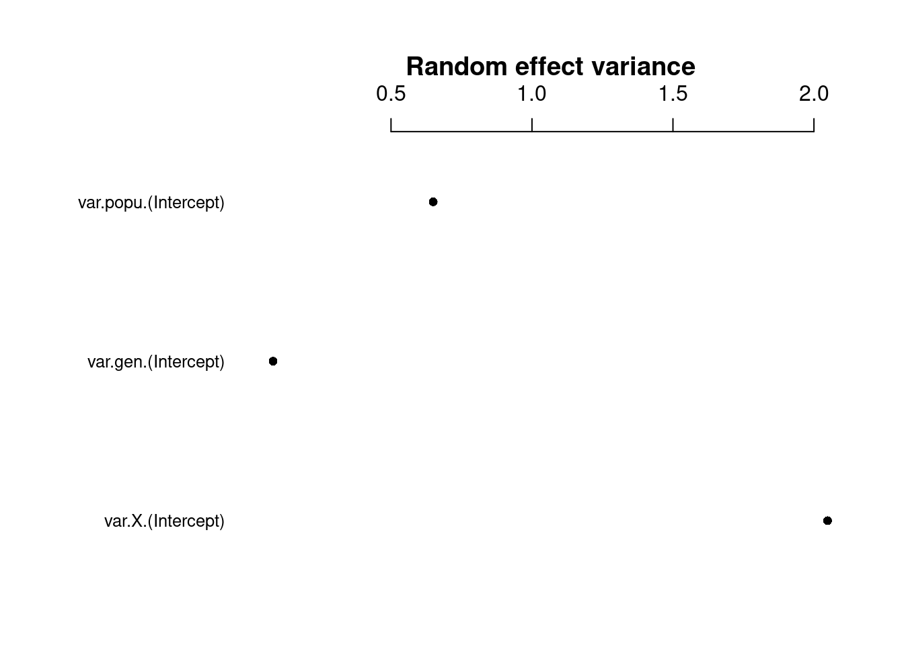

Chapter 17 Poisson-lognormal GLMM
A second option for a distribution where the variance increases more rapidly with the mean is the Poisson-lognormal distribution. This model effectively places a lognormal prior on \(εi\).
A Poisson-lognormal distribution with mean \(µ\) and lognormal prior variance \(σ2\) has variance:
\(var(y) = µ + µ2 [exp(σ2) - 1]\)
In contrast, for the negative binomial, we saw that the distribution was given by:
\(var(y) = µ + µ2/k\)
More generally, the variance term \(σ2\) in the Poisson-lognormal distribution will depend on the grouping level we select (e.g., at the individual, genotype or population level). That is, the Poisson-lognormal model can allow for a more flexible approach to assigning the observed aggregation to different sources of heterogeneity.
To implement the observation-level random effect, we will evaluate it at the individual level. This can be achieved simply by placing an observation-level random effect in the model formula.
See Harrison (2014) for further details https://doi.org/10.7717/peerj.616.
To do this in R, we first create a variable named X:
# Poisson-lognormal GLMM
# This variable is already in your data 'dat.tf', but here is
# how we create it:
dat.tf$X <- 1:nrow(dat.tf)We take over-dispersion into account by adding the random effect (1|X) in the formula:
# Account for over-dispersion
mpl1 <- glmer(total.fruits ~ nutrient * amd + rack + status +
(1 | X) + (1 | popu) + (1 | gen), data = dat.tf, family = "poisson",
control = glmerControl(optimizer = "bobyqa"))Finally, we test for over-dispersion:
## chisq ratio p logp
## 1.775360e+02 2.886764e-01 1.000000e+00 -3.754681e-73Ratio is not <1 and meets our criterion!
17.1 Random intercepts
Now that we have the appropriate error distribution, we can test the importance of the random intercepts (for population and genotype) by comparing nested models with and without the random effects of interest using either:
1. An information theoretic approach (such as, Akaike Information Criterion; AIC), which examines several competing hypotheses (models) simultaneously to identify the model with the highest predictive power given the data. As before, we will use the AICc to correct for small sample sizes.
2. A frequentist approach (traditional null hypothesis testing or drop1 approach), where the significance of each term is evaluated in turn (by comparing nested models together using the anova() function and the significance of the likelihood ratio test; LRT). It’s important to keep in mind that with this approach we are testing a null hypothesis of zero variance for the random effects, but given that we cannot have negative variance, we are testing the parameter on the boundary of its feasible region. Therefore, the reported p value is approximately twice what it should be (i.e., we’ve truncated half of the possible values that fall below 0).
# popu only
mpl1.popu <- glmer(total.fruits ~ nutrient * amd + rack + status +
(1 | X) + (1 | popu), data = dat.tf, family = "poisson",
control = glmerControl(optimizer = "bobyqa"))
# gen only
mpl1.gen <- glmer(total.fruits ~ nutrient * amd + rack + status +
(1 | X) + (1 | gen), data = dat.tf, family = "poisson", control = glmerControl(optimizer = "bobyqa"))
# IC approach using AICc
ICtab(mpl1, mpl1.popu, mpl1.gen, type = c("AICc"))## dAICc df
## mpl1 0.0 10
## mpl1.popu 2.0 9
## mpl1.gen 16.1 9## Data: dat.tf
## Models:
## mpl1.popu: total.fruits ~ nutrient * amd + rack + status + (1 | X) + (1 |
## mpl1.popu: popu)
## mpl1: total.fruits ~ nutrient * amd + rack + status + (1 | X) + (1 |
## mpl1: popu) + (1 | gen)
## npar AIC BIC logLik deviance Chisq Df Pr(>Chisq)
## mpl1.popu 9 5017.4 5057.4 -2499.7 4999.4
## mpl1 10 5015.4 5059.8 -2497.7 4995.4 4.0639 1 0.04381 *
## ---
## Signif. codes: 0 '***' 0.001 '**' 0.01 '*' 0.05 '.' 0.1 ' ' 1## Data: dat.tf
## Models:
## mpl1.gen: total.fruits ~ nutrient * amd + rack + status + (1 | X) + (1 |
## mpl1.gen: gen)
## mpl1: total.fruits ~ nutrient * amd + rack + status + (1 | X) + (1 |
## mpl1: popu) + (1 | gen)
## npar AIC BIC logLik deviance Chisq Df Pr(>Chisq)
## mpl1.gen 9 5031.5 5071.5 -2506.8 5013.5
## mpl1 10 5015.4 5059.8 -2497.7 4995.4 18.177 1 2.014e-05 ***
## ---
## Signif. codes: 0 '***' 0.001 '**' 0.01 '*' 0.05 '.' 0.1 ' ' 1The model without the random intercept for genotype is within 2 AICc units of the full model, which indicates that they are equally plausible (i.e., little evidence for including a random intercept for genotype). However, when using the Likelihood approach, and keeping in mind the boundary effect (p-values are inflated by a factor of 2), we note that p « 0.05 in both anova tests. Thus the model with both random terms (mpl1) is selected.
17.2 Parameter plots
Now that we’ve chosen our model, let’s visualize the model parameters with parameter plots.
A graphical representation of the model parameters can be obtained using the coefplot2() function from the coefplot2 package :
Note: This package is not on CRAN! We install it from GitHub using the remotes package.
## Warning in library(package, lib.loc = lib.loc, character.only = TRUE,
## logical.return = TRUE, : there is no package called 'coefplot2'## reshape (NA -> 0.8.8 ) [CRAN]
## coda (NA -> 0.19-4) [CRAN]
##
checking for file ‘/tmp/RtmpzxPRC2/remotes3453169b09db/palday-coefplot2-23b7dcb/pkg/DESCRIPTION’ ...
✔ checking for file ‘/tmp/RtmpzxPRC2/remotes3453169b09db/palday-coefplot2-23b7dcb/pkg/DESCRIPTION’
##
─ preparing ‘coefplot2’:
##
checking DESCRIPTION meta-information ...
✔ checking DESCRIPTION meta-information
##
─ checking for LF line-endings in source and make files and shell scripts
##
─ checking for empty or unneeded directories
##
─ building ‘coefplot2_0.1.3.3.tar.gz’
##
## 
Here we can see that some random effects exhibit greater variance than others.
The random effect variance (σ2i) represents the mean random effect variance of the model. Since this variance reflects the “average” random effects variance for mixed models, it is also appropriate for models with more complex random effects structures, like random slopes or nested random effects.

The fixed effects variance (σ2f) is the variance of the matrix-multiplication β∗X (parameter vector by model matrix).
Note: error bars are only shown for the fixed effects because glmer() doesn’t model uncertainty for random effects.
Now let’s visualize the random effects
We can also extract the random effect (or group-level) deviations from the fixed intercept using ranef(). This will tell us how much the intercept is shifted up or down in particular populations or genotypes relative to the fixed intercept. The deviations can then be plotted using dotplot() from the lattice package, which will return a two-faceted plot for each random effect (i.e., popu and gen).
# dotplot code
pp <- list(layout.widths = list(left.padding = 0, right.padding = 0),
layout.heights = list(top.padding = 0, bottom.padding = 0))
r2 <- ranef(mpl1, condVar = TRUE)
d2 <- dotplot(r2, par.settings = pp)
grid.arrange(d2$gen, d2$popu, nrow = 1)
From this plot, we observe differences among population, where Spanish populations (SP) have larger values than Swedish (SW) or Dutch (NL) populations.
We also observe mild differences among genotypes, where difference among genotypes seem to be largely driven by genotype 34.